Service design · UX research · MDes graduation project
The Anxiety Market
Field research into why Chinese international graduates in the UK struggle to use the support around them as they move from study to work, and a paper decision practice I tested in two rounds with students.
Completed · exploratory research, not a launched service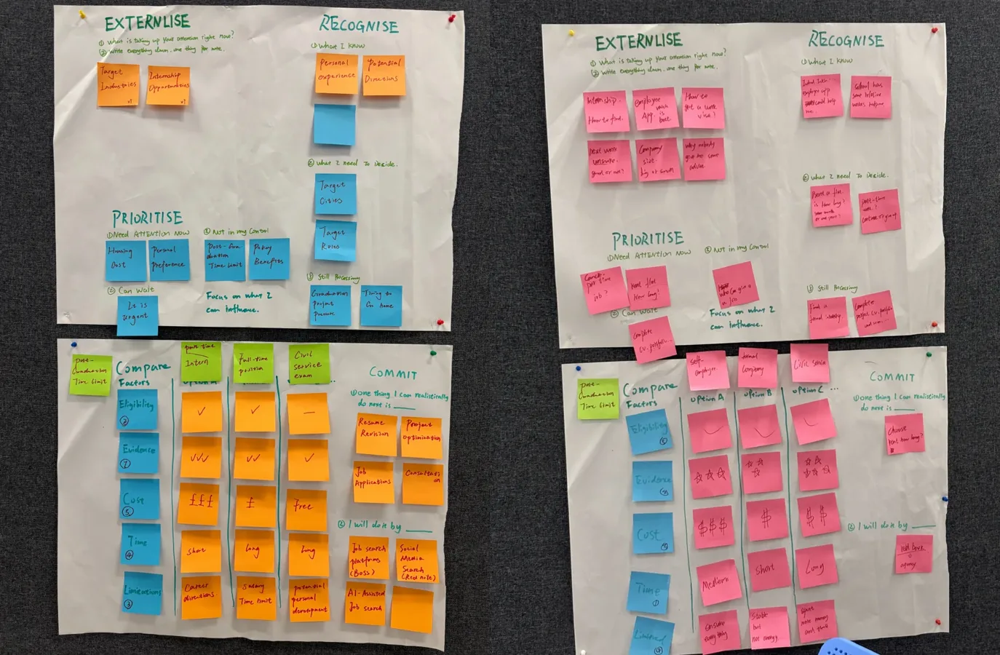
In 30 seconds
- My role
- Solo project: research, synthesis, prototype design and testing
- What I did
- Collected 6 student stories, compared Chinese and UK job platforms, visited 2 public employment services myself, then tested a paper prototype in 2 rounds
- What I found
- Help exists, but students can’t easily reach or judge it, so paid agencies selling “certainty” fill the gap
- Result
- Students turned a pile of pressures into one clear next step. Anxiety didn’t disappear, and I say so.
- Field research
- User interviews
- Research synthesis
- Stakeholder mapping
- Prototyping
- Usability testing
Was this only my experience?
As I approached graduation, job applications ran into housing, visa, money and family pressure at the same time. Everything got called “job-search anxiety”. I wanted to know whether others felt the same, and why support that clearly exists was so hard to act on.
Six stories, six repeating patterns
I compared six anonymised open-narrative stories (P1–P6), then checked each pattern against the platform, desk and field evidence. It was not only me.
- Uncertainty becomes emotionalwhen the outcome feels high-stakesP1 · P2 · P4 · P5 · P6
- Time pressure creates urgencyoverlapping tasks and fixed deadlines make people feel lateP1 · P2 · P3 · P5
- Comparison creates self-doubtpeople question themselves before anything has failedP2 · P4 · P6
- Information needs contextmore volume doesn’t help if source, fit or motive is unclearP1 · P2 · P4 · P6
- Practical feedback is missinggeneral encouragement isn’t enough at key momentsP1 · P3 · P5
- Trusted lived experience helpspeers, alumni and structured guidance reduce uncertaintyP2 · P5 · P6
The student sits in the middle of a crowded system.
I mapped who the student deals with during graduation and job search, and what each side gives or asks for.
- University careers & wellbeingofficial guidance, learning
- Public employment servicesfree, but eligibility unclear
- Official sources & visa ruleswhat is allowed, what is required
- Family & parentsfunding, expectations, pressure to return
- Friends & peersempathy, but also comparison
- Alumni & mentorsreal experience, industry feedback
- Job platformsLinkedIn, Chinese job apps
- Social communitiesXiaohongshu posts, group chats
- Paid career agenciesspeed and “certainty”, for a fee
- Employersjob ads, screening, results
- Recruiters & application systemsfilters, status emails, silence
Pressure from outsideVisa rulesRecruitment calendarLabour marketFamily financesGraduation deadline
See the full stakeholder map ↗
The moment before acting: when several pressures compete and the student has to judge which support to trust and what to do first. A first-touch practice, run with a facilitator today, aiming for a version students can use on their own.
Seeing what is creating pressure · picking what matters now · choosing a fitting next response
Finding jobs · CV or interview coaching · guaranteeing outcomes · clinical mental-health care
Visible is not the same as usable.
I went through the route to Jobs & Business Glasgow, a free public employability service, as a student would.
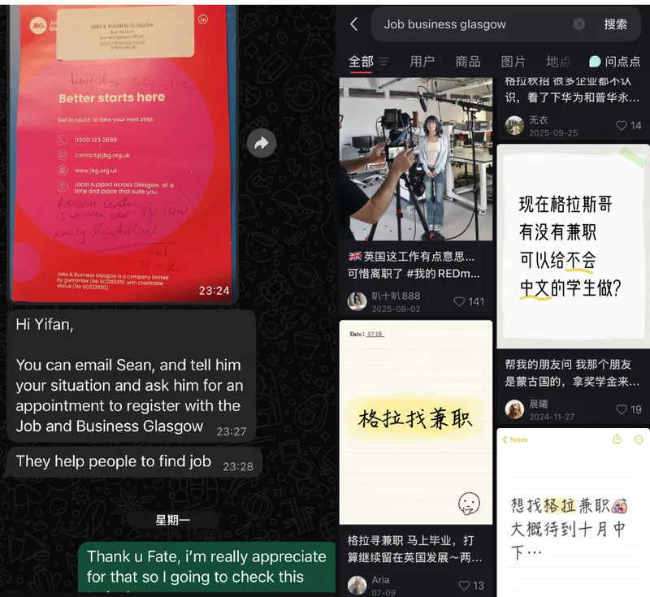
01 · SearchA friend pointed me to Jobs & Business Glasgow. Searching social media turned up nothing relevant.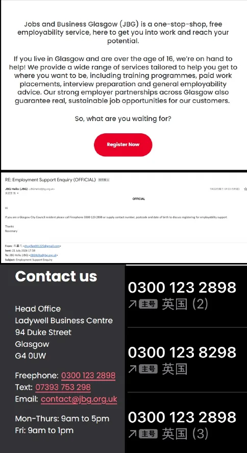
02 · Official siteThe website said anyone aged 16+ living in Glasgow could get help.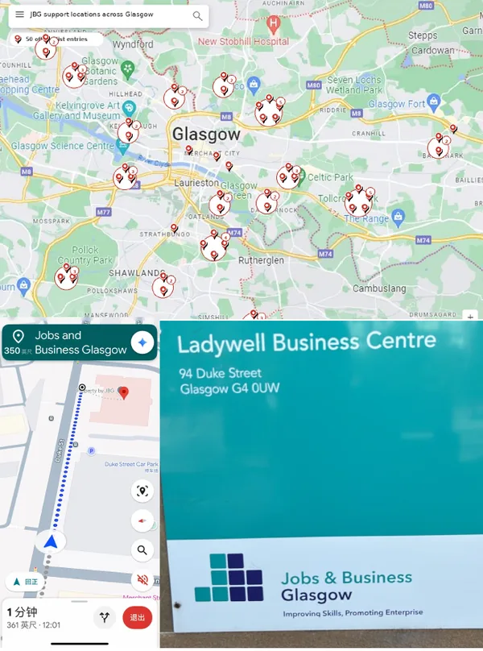
03 · RouteMany locations on the map, a phone line that gave no clear answer. I worked the route out myself.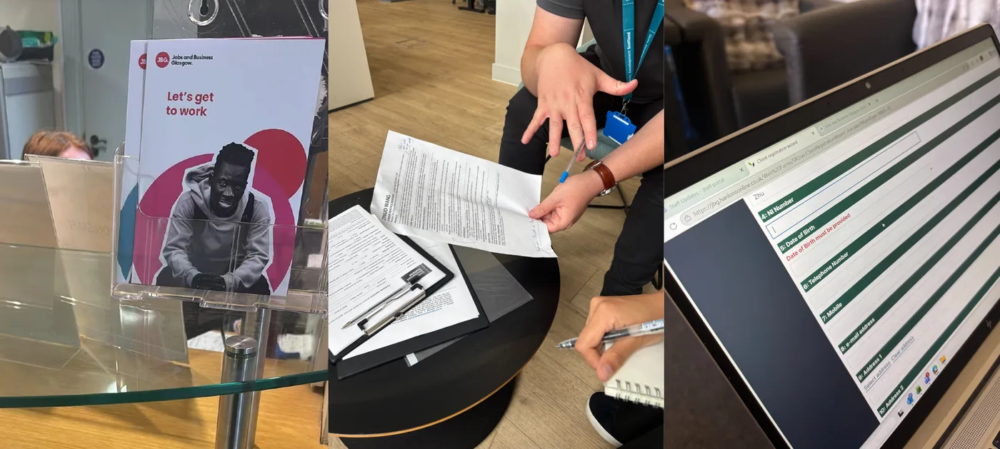
04 · On siteSeveral rounds of waiting, then: our student-visa status was not eligible.
The barrier was not missing support. It was the invisible work before support could begin: searching, decoding, calling, finding the door. Under pressure, each step is a place to give up.
What did work: help that came through people
The route into JBG didn’t start with a website. It started with volunteering, which was never meant as career support.
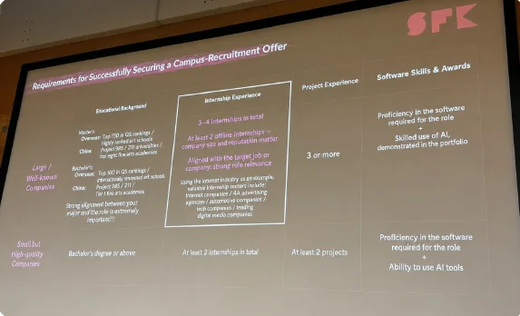
BehindA careers talk made me feel I was already falling behind.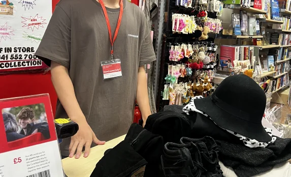
A place to startCharity-shop volunteering gave me routine, English practice and local contact.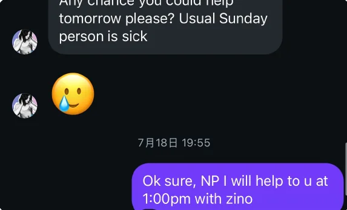
TrustedBeing asked to help reduced some of the anxiety. Then a manager recommended JBG.
Routine, reassurance and connection changed what felt manageable before any formal service did. This came back later, when my framing lost its emotional side.
When nothing feels certain, certainty sells.
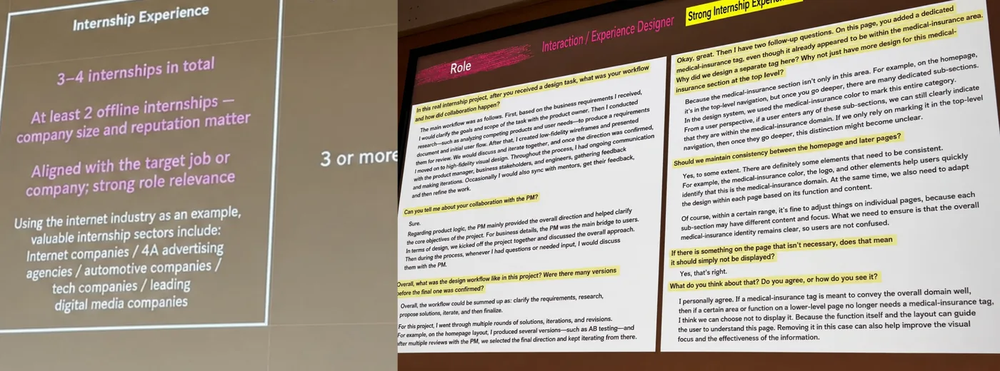
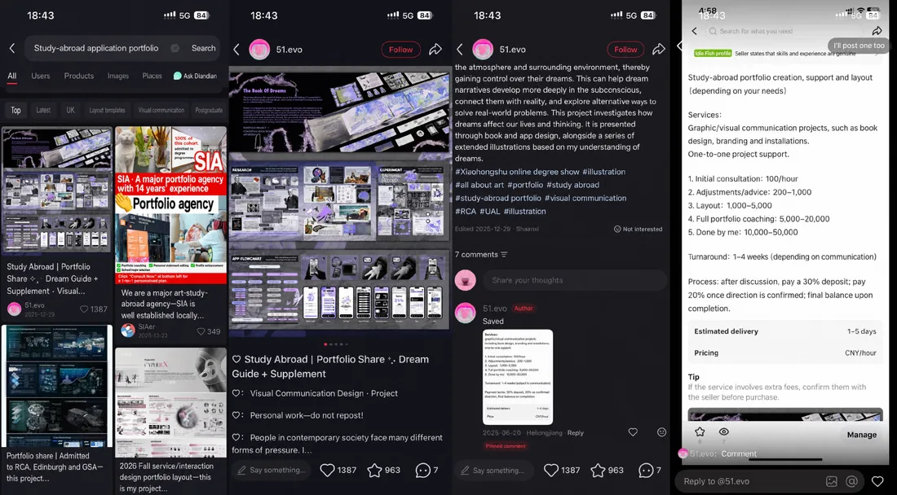
Public routes were free but fragmented. Commercial routes sold speed, insider access and “guaranteed” outcomes, and for students who already felt late, that clarity itself was the product.
One label was hiding four kinds of pressure.
“Job-search anxiety”
Each pressure has its own urgency and degree of control. So the design job was not “reduce anxiety” but: separate the pressures first, then decide what kind of response each one needs.
I got the scope right by cutting out the point.
How the design question (“How might we…?”) changed over the project, including one wrong turn.
- StartEmotion was visible, but the scope was too broad.The whole international-student journey, with no clear place to intervene.
- Mid-stageSpecific, but too functional.“How might we make applications, materials, status and feedback visible and manageable?” It was turning into an admin tool. My tutor pointed out the emotional core had disappeared.
- FinalReconnect emotion and decision.“How might we connect emotional support and decision support so Chinese international graduates can make confident, evidence-informed decisions in the move from study to work?”
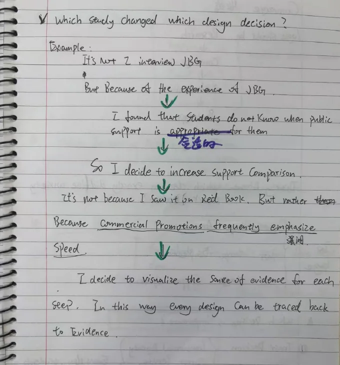
Every step traces back to a finding.
I designed the experience before the format: a three-step paper practice used with a participant’s own, current situation.
- Make the pressures visible
- Pick what matters now
- Choose a response that fits
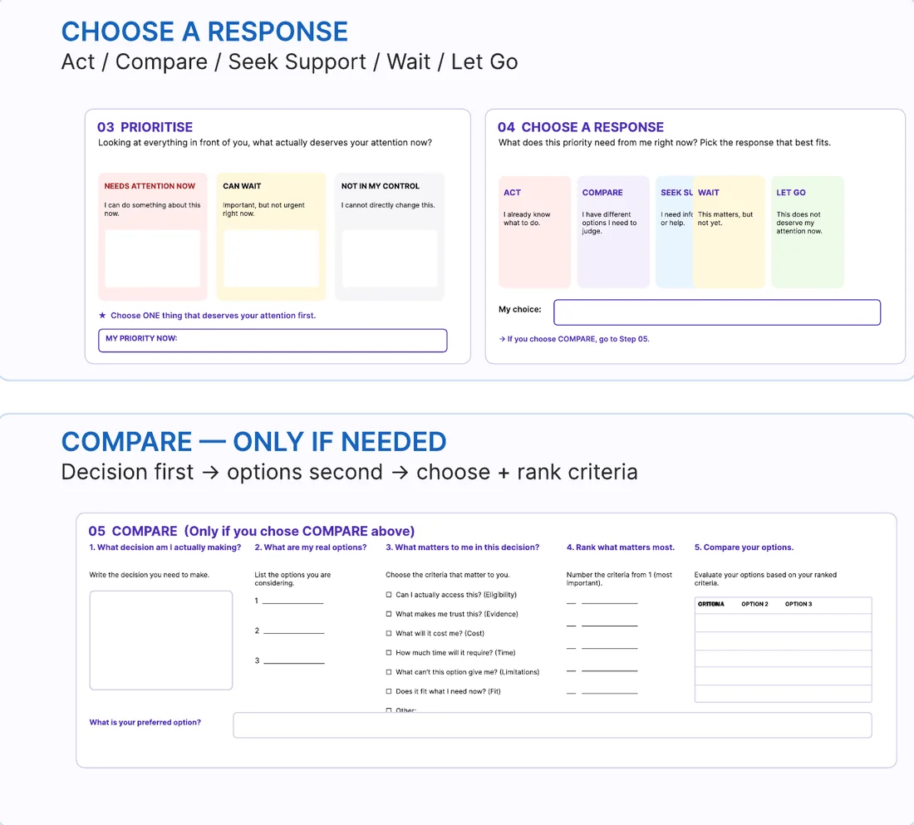
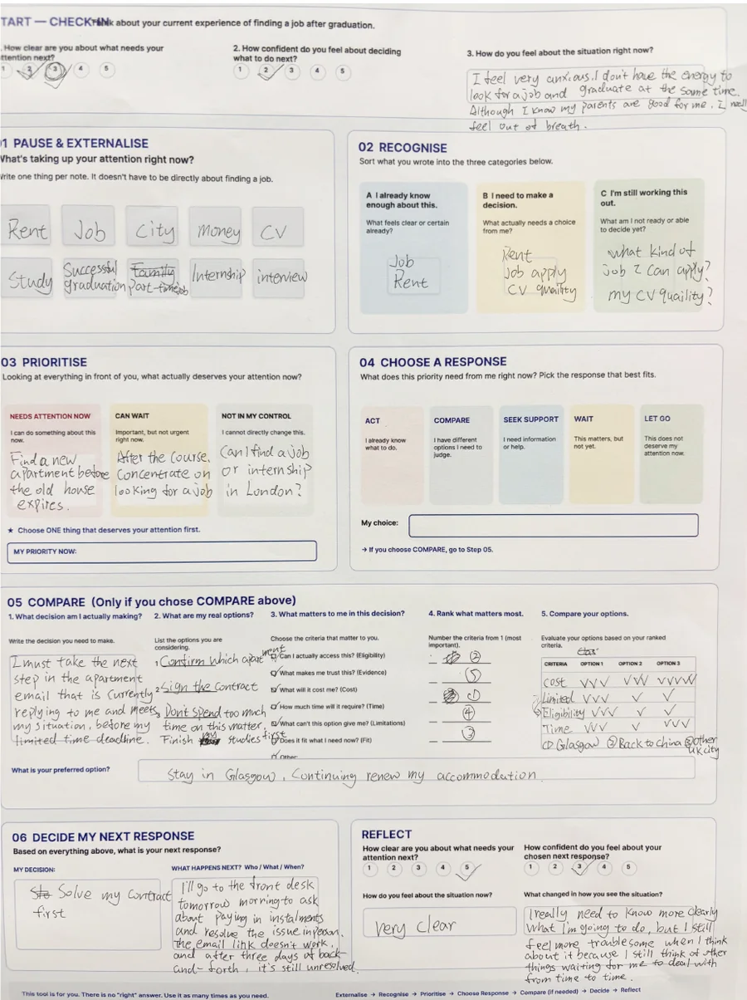
Testing changed the logic, not just the wording.
| Clarity | Confidence | What changed | |
|---|---|---|---|
| Participant A | 4.2 → 4.3 | 3.9 → 3.9 | A concrete plan and people to consult |
| Participant B | 5 → 5 | 3 → 3 | Realised accommodation came first |
The scores barely moved. The decisions did.
“I can be clear and still feel anxious.”Participant, round 1
“I realised there are some things I can choose to let go of.”Participant, round 1
What changed from V1 to V2
- Abstract labels → plain questions“Recognise” became “What feels clear already?”
- Response before comparisonAct, compare, seek support, wait or let go
- Decision before optionsState the decision, then pick and rank your own criteria
- Thinking and feeling, measured apartThe closing reflection no longer assumes clear means calm
- Act
- Compare
- Seek support
- Wait
- Let go
In round 2, one participant started with rent, job search, money, CV, graduation, internship and interviews all at once, and ended with:
“Solve my contract first.”Participant, round 2, who added: “but it still feels troublesome, because the other things are waiting.”
Still rough: “Compare” needed examples and occasional explanation, and the full sheet felt like a burden to someone already overwhelmed. The next version should need less guidance, not add more.
What I can claim, and what I can’t yet.
Many competing pressures became one priority and one concrete next step.
That anxiety goes down, that people can do it without a facilitator, or that it sticks with repeated use.
A four-question quick mode: What is taking my attention? What matters now? What response do I need? What will I do next? Then repeated use, and other decisions like housing or visas.
The biggest shift for me: from designing an object to designing a capability, and from promising “less anxiety” to a claim the evidence could actually carry.